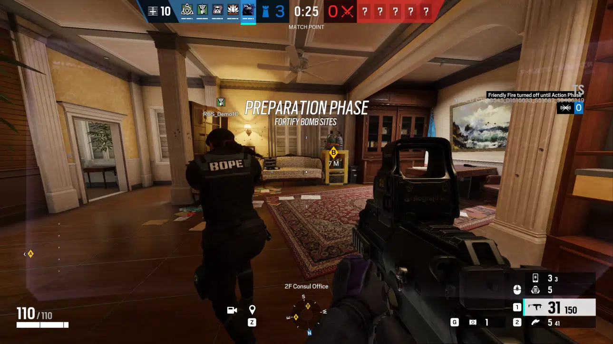

Rainbow Six Siege egy intenzív, belső nézetes lövöldözős játék, amelyben az akció és a stratégia összefonódik. Fejlett grafika és páratlan játékélmény jellemzi, amiért milliók rajonganak világszerte.

A játék a Rainbow Six sorozat részeként debütált, amelyet a Tom Clancy regényei inspiráltak. A Siege kiemelkedik azáltal, hogy egy olyan multiplayer élményt kínál, amelyben a játékosok mindentől függenek egymástól. Minden taktikai döntés, minden lerakott robbanószerkezet jelentős hatással lehet a csata kimenetelére.
Tom Clancy:
Tom Clancy az amerikai író, aki világszerte elismert katonai és politikai thriller könyveiről ismert. Legismertebb művei közé tartozik a "Jack Ryan" és a "John Clark" sorozat, amelyek valósághű katonai elemekkel és izgalmas cselekménnyel rendelkeznek. Clancy művei gyakran kapcsolódnak az aktuális politikai és katonai eseményekhez, és mélyrehatóan kutatják a technológia és a geopolitika világát. Az író rendkívül sikeres volt, könyvei több millió példányban keltek el világszerte.
A Tom Clancy által kreált univerzumot számos videojáték adaptálta. A könyveiből származó legismertebb videojáték sorozat a "Tom Clancy's Rainbow Six", amely elsőként a "Rainbow Six" című könyvre épült. Ez a sorozat az akció-orientált taktikai lövöldözős játékokat ötvözi a valósághű katonai stratégiával. A játékokat az Ubisoft fejleszti és kiadja, és hűen tükrözik Clancy műveinek izgalmas és feszült hangulatát. A "Rainbow Six" videojátékok hatalmas népszerűségnek örvendenek a játékosok körében, és sokak számára megismertették a Tom Clancy univerzumát a videojátékok világában is.
A játékosok két ellenkező csapatot alkotnak: a védelmet és a támadást. A védelmi csapat célja megvédeni egy adott területet vagy célponzt, míg a támadók küzdenek, hogy áttörjenek a védelmen és elérjék a céljukat.
